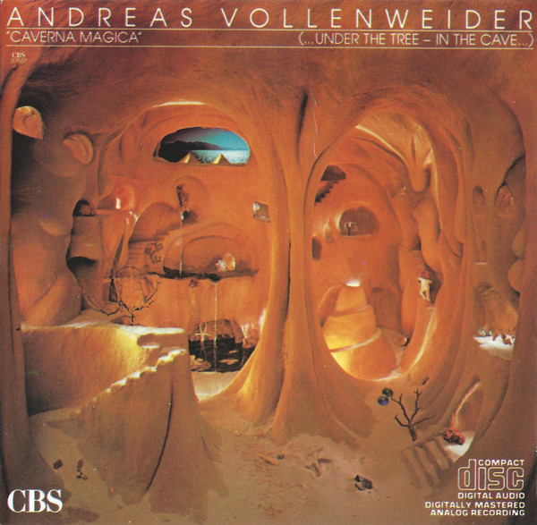

CD
Caverna Magica (...Under The Tree - In The Cave...)
Andreas Vollenweider
Media: VG+ · Sleeve: VG+
—
Personal
Discogs SuggestedCA$24.34
Discogs MedianCA$24.34
Discogs HighCA$24.34
- Physical Copy ID
- BB-CD-3311
- Year
- 1982
- Label
- CBS
- Catalog #
- WMK 37827
- Country
- CACanada
- Genre / Style
- Electronic · Ambient